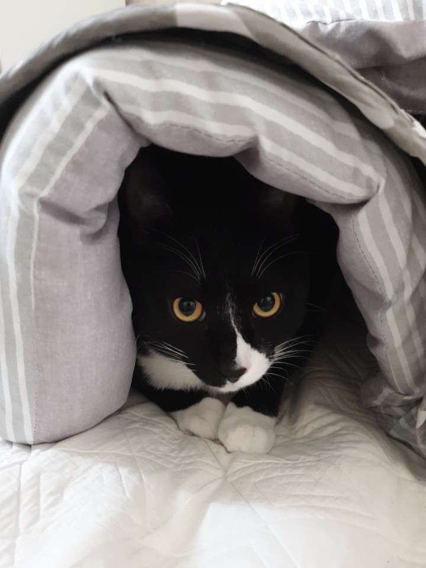
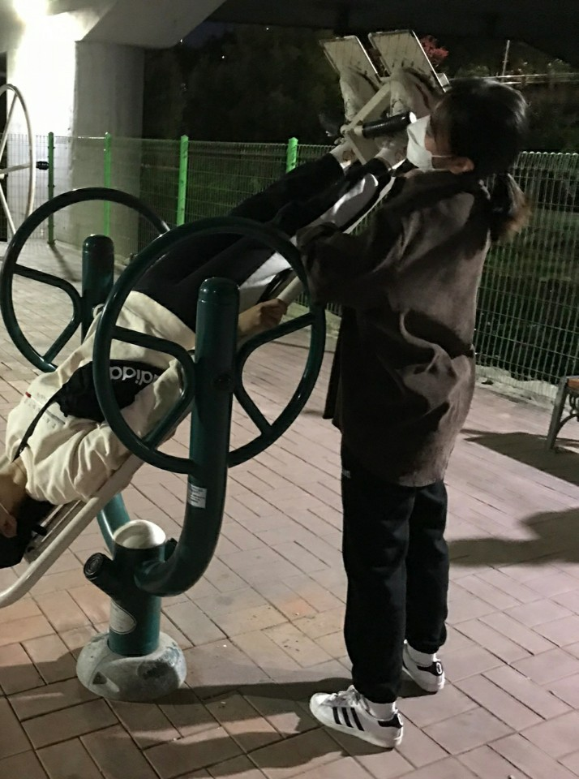

Welcome To My Life
Hello there!
Hello. I am Minjo Park, majoring in service design engineering. I don't have a dream yet, but I'm trying hard to find it.
I like to take a walk and eat delicious food. Because I feel relieved when I do two things. Especially after taking a walk,
I feel like my head is clearing up and my head is filled with positive thoughts.
My Favorites

His name is 'GGang'. I've lived with him for over a year. He is a rescued cat. He has a very big body. Not only does he have soft belly fat, but he also has firm muscles.
He sleeps and eats very well. While I'm studying, he pushes his head into the door.
He comes up to the desk and acts cute to play with him.
My Works

I like to exercise. When the weather is nice, I go cycling with my friends or alone. Sometimes I watch YouTube videos at home and follow them.
I climb mountains very, very occasionally. As the weather got colder, I was too lazy to move, so I did exercise less often. But I try to move for ten minutes.
The less I move, the more lethargic I become.